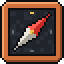

Der Block-Kompass braucht JavaScript für Katalog, 3D-Ansicht und Anleitungen. Bitte aktiviere JavaScript für diese Seite.
Beschreibe in eigenen Worten, was du bauen möchtest – ein Bauwerk, ein Thema oder eine Form mit Maßen.
Höchstens 120 Zeichen.